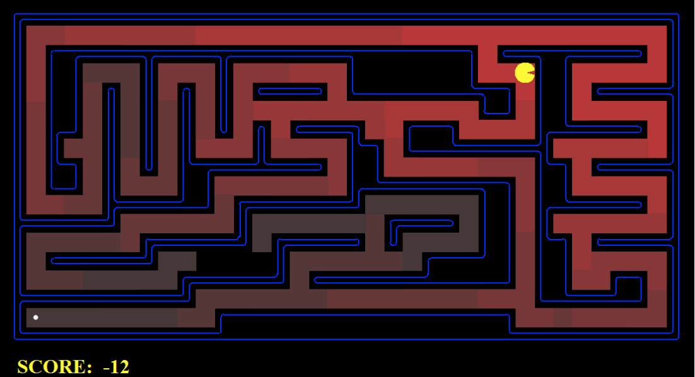

Pacman: Search
CS188 AI
Made for project 1 in CS188 Spring 2014. Built using: Python
Goal
The goal of this project was to have Pacman search the game using heuristics. Basic naiive searches like BFS and DFS were expanded upon to allow more sophisticated techniques like uniform cost search and astar. Astar was made "smart" by utilizing heuristics such as corner, Manhattan distances, and Euclidian distances to food particles. Below shows Pacman using two different techniques- UCS on the left and astar on the right. The pinkish shading shows the number of nodes expanded by these search methods. As you can see, astar is better.
Example Runs
